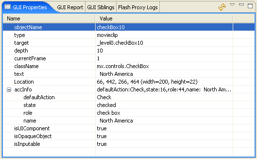

Checking the accessibility of a webpage containing Flash content in the Flash Accessibility perspective
The ACTF simulates how webpages containing Flash content are read out by screen readers that visually
impaired people use, and modifies any accessibility problems.
Accessibility Guidelines for Flash Content
There are no established and well-known accessibility guidelines for Flash content,
but Adobe® has published a best practices document:
Bob Regan, "Best Practices for Accessible Flash Design", August 2005, Adobe Systems, Inc. (PDF file)
In this document the following 11 items are listed as best practices:
- Provide Text Equivalents
- Provide Context
- Control Reading Order
- Control Animation
- Ensure Keyboard Access
- Progressive Disclosure
- Enable Component Accessibility
- Provide Captions
- Provide Control over Audio Playback
- Use Color Wisely
- Support Users with Low Vision
In this section how to check these items using ACTF's Flash Accessibility perspective is described.
Note that the Adobe document is only best practices and not guidelines.
That is because it is hard to automatically check these items, and they mostly call for checks by human beings.
However, the ACTF's Flash Accessibility perspective efficiently supports people in performing these checks.
Checking Process for Each Check Items
The following checks are performed in the Flash Accessibility perspective.
Before starting check, the webpage to be checked should be displayed in the Browser view.
Checking for "1. Provide Text Equivalents"
- Accessibility checking automatically starts when the webpage is shown in the Browser view.
The checking process requires a short time to be completed.
- Analyzing automated accessibility checking result:
The results of the tests are shown in the GUI Report view (Figure 1).
See Problems reported in the GUI Accessibility perspective
for the details of the problems.
Currently, all of the problems are related to some lack of text information.
- The entire webpage is the target of the check.
If you want to check just the Flash content in the page, select Show Flash Items Only in the GUI Summary view.
- To change the type of problems reported (Error, Warning, or Information), Use the view menu (Ctrl+F10) to change
the display settings. The selected results are shown immediately.
- When you select a line of the report, the problematical area is highlighted in the Browser view,
and the object icon in the GUI Outline view is also selected. Please verify the cause of the problem.
- For example, a button without text information is shown as "<number> Button" in the
GUI Summary view (Figure 2), which means the specified screen reader will read the button in this way.
It is shown as "Nameless (button)" in the GUI Outline view (Figure 3).
Figure 1. Automatic accessibility check results
Figure 2. Buttons without text information (in GUI Summary view)
Figure 3. Buttons without text information (in GUI Outline view)
Checking for "2. Provide Context"
- Verify that the content provides its own description and exposes its state in the GUI Summary and the
GUI Outline view.
- Use the Refresh function in either view when the application screen changes due to scrolling or some other operation.
- If necessary, use the Read Entire Text function in the GUI Summary view to check the listenability with synthetic speech.
Checking for "3. Control Reading Order"
- Verify that reading order of the content is appropriate in the GUI Summary view,
where text content and order simulates the text that will be read aloud by MSAA-based screen readers.
- Use the Refresh function in either view when application screen changes due to scrolling or some other operation.
- If necessary, use the Read Entire Text function in the GUI Summary view to check the listenability using synthetic speech.
Checking for "4. Control Animation"
- Verify that animated objects are invisible from the screen readers in the GUI Summary and the
GUI Outline view.
- Perform a visual check in the Browser view for the visual check items such as blinking.
Checking for "5. Ensure Keyboard Access"
- Verify that all operations can be performed by using the keyboard in the Browser view or in a standard browser.
Checking for "6. Progressive Disclosure"
- Verify that user interface of the content offers a limited number of options at the top
and more as the user drills down, using the GUI Summary or the GUI Outline view.
- Use the Refresh function in either view when the application screen changes due to scrolling or some other operation.
- If necessary, use the Read Entire Text function in the GUI Summary view to check the listenability using synthetic speech.
Checking for "7. Enable Component Accessibility"
- Find the Component objects in the Flash Outline view:
If you select a row in this view, the corresponding details are shown in the GUI Properties view.
Component objects are those whose
isUIComponent property value is true (Figure 4).
The following hints will help in finding them:
- If an instance name provided at authoring time is known,
look for objects with that name in the Flash Outline view.
- If the instance name is not known, look for the objects in the highlighted rectangle in the Browser view when the entry is selected in the Flash Outline view.
- Verify that an appropriate role is assigned to each Component:
The Component type (class) should correspond to the
className property value.
In the example of Figure 4 the object belongs to CheckBox class.
Verify that an accInfo property exists and that its role subproperty
corresponds to the Component class in the GUI Properties view.
Figure 4 also shows an example where the role is set properly.
If a Component is not accessible, then its button icon appears and is marked with a red box as shown in Figure 5.
When the correct role is set, a separate icon (for each Component type) is shown in the Flash Outline view (Figure 6).

Figure 4. GUI properties of a Component
Figure 5. Components with accessibility not enabled (in the Flash Outline view)
Figure 6. Components with accessibility enabled (in the Flash Outline view)
Checking for "8. Provide Captions"
- Verify that captions are properly provided in the Browser view or in a standard browser.
Checking for "9. Provide Control over Audio Playback"
- Manually verify the sound can be controlled in the Browser view or in a standard browser.
Checking for "10. Use Color Wisely" and "11. Support Users with Low Vision"
- This is the only check item that is performed in the Low vision view in the HTML Accessibility perspective.
See related topics for the Low Vision simulation.
- Based on the results of the checks, verify that color is not the sole means of providing information and that
the content incorporates options that allow users to modify the text size of an application.
- Check the content again when the application screen changes due to scrolling or some other operation.
Go to Index
Adobe, the Adobe logo, PostScript, and the PostScript logo are either registered trademarks or trademarks of Adobe Systems Incorporated in the United States, and/or other countries.